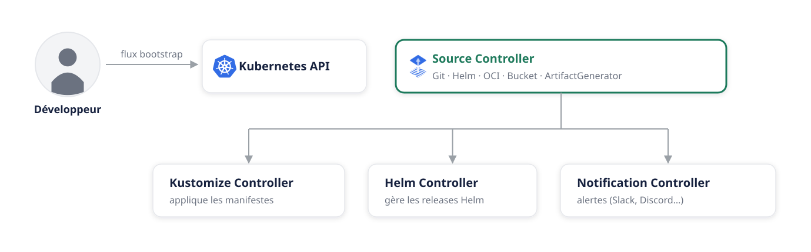
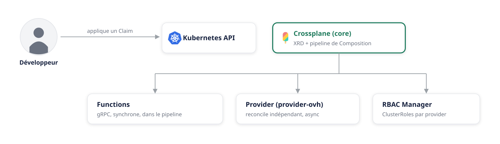
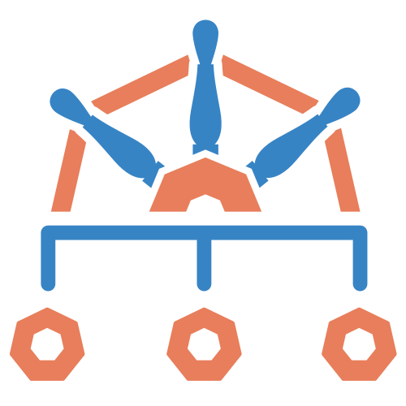

Qui vous parle
Conception d'offres de plateforme managée – Kubernetes-as-a-Service et les briques que les clients consomment par-dessus.
Exploitation de l'univers des bases de données managées : OpenStack en dessous, Kubernetes pour le control plane, Go et Ansible pour l'automatisation.
Au programme
Pourquoi les équipes ops sont un goulot d'étranglement
Git comme source de vérité unique – réconciliation continue
Le control plane universel pour l'infra – XRD, Compositions, Claims
Des compositions programmables – une infra qui comprend l'intention
Pourquoi les équipes plateforme existent
- Infrastructure à la carte de tickets – des jours d'attente pour une simple base de données.
- Drift de configuration – la prod change, en silence.
- Pas d'audit trail – aucun historique, aucune revue de code.
- Silos de compétences – le savoir verrouillé chez quelques personnes.
Platform Engineering
GitOps avec Flux
Git comme source de vérité unique pour tout
Flux CD – Le moteur GitOps
- 1Surveille ses sources en continuGitRepository, HelmRepository, ou OCIRepository – Git n'est qu'une des trois
- 2Applique les manifestes automatiquementplus de kubectl apply en prod, jamais
- 3Détecte et corrige le driftsi quelqu'un modifie le cluster, Flux l'annule
- 4Audit trail completchaque changement tracé à un commit, un auteur, un horodatage
apiVersion: source.toolkit.fluxcd.io/v1
kind: GitRepository
metadata:
name: gitops-selfservice
namespace: flux-system
spec:
interval: 1m
url: https://github.com/fallmor/gitops-selfservice
ref:
branch: mainFlux n'est pas un seul binaire

Flux va plus loin qu'un GitRepository
apiVersion: helm.toolkit.fluxcd.io/v2
kind: HelmRelease
metadata:
name: crossplane
spec:
chart:
spec:
chart: crossplane
sourceRef:
kind: HelmRepository
name: crossplane-stableapiVersion: kustomize.toolkit.fluxcd.io/v1
kind: Kustomization
metadata:
name: crossplane-resources
spec:
path: ./crossplane
dependsOn:
- name: crossplane-provider
sourceRef:
kind: GitRepository
name: gitops-selfservicedependsOn.Crossplane
Le control plane universel pour l'infrastructure
3 concepts à connaître
Ce que les développeurs peuvent demander – comme un CRD Kubernetes.
Fait correspondre le Claim à de vraies ressources cloud. Les devs ne voient jamais cette couche.
10 lignes de YAML. Crossplane provisionne l'infra cloud réelle.
XRD → Composition – Suivre un champ
properties:
plan:
type: string
default: discovery
enum:
- discovery
- production
flavor:
type: string
default: b3-8
enum:
- b3-8
- b3-16patches:
- type: FromCompositeFieldPath
fromFieldPath: spec.parameters.plan
toFieldPath: spec.forProvider.plan
- type: FromCompositeFieldPath
fromFieldPath: spec.parameters.flavor
toFieldPath: spec.forProvider.flavorCrossplane non plus n'est pas un seul binaire
crossplane-system sur ce cluster.

Flux + Crossplane – Un vrai partenariat
- Surveille les dépôts Git
- Synchronise les manifestes vers le cluster
- Gère les releases Helm
- Déclenche les claims Crossplane via Git
- Reçoit les claims d'infra depuis Git
- Provisionne de vraies ressources cloud
- Réconcilie le drift en continu
- Expose le cloud comme une API Kubernetes
Un Claim, puis un drift – en direct
apiVersion: selfservice.ovh/v1alpha1
kind: DatabaseStack
metadata:
name: demo-postgres-db
namespace: default
spec:
parameters:
engine: postgresql
plan: discovery
compositionRef:
name: database-postgres-ovhflavor et version ont des défauts sensés dans le XRD – pas besoin de les préciser. Aucune connaissance cloud requise. Aucun ticket.git push → Flux applique → Crossplane crée la base, l'utilisateur et un bucket sur OVHcloud.
Je modifie et je supprime des ressources depuis la console OVH. Crossplane corrige et recrée – automatiquement.
Crossplane Functions
Rendre les compositions programmables – et intelligentes
Crossplane Functions – La couche extensible
Patches classiques de champs. Utilisé dans database-composition.yaml.
Positionne la condition Ready une fois la ressource générée valide. Utilisé dans le pipeline IA.
Scripting KCL – fait partie de l'écosystème, pas utilisé dans ce repo.
Appelle l'API Claude et renvoie une ressource OVHcloud prête à l'emploi à partir d'une description en langage naturel.
La fonction Claude AI – une infra qui comprend l'intention
spec:
parameters:
workloadDescription: >
E-commerce, ~800 utilisateurs
concurrents au pic (soldes
Tabaski). Haute disponibilité
requise.kind: ProjectDatabase
spec:
forProvider:
engine: postgresql
plan: production
flavor: b3-16
diskSize: 480
nodes:
- region: GRA
- region: GRAdiskSize est calculé indépendamment du plan.
Le pipeline IA complet
mode: Pipeline
pipeline:
- step: ai-generate-resources
functionRef:
name: function-claude
input:
modelName: claude-sonnet-4-6
systemPrompt: |
Pèse : besoin de dispo, forme
du trafic, volumétrie/
croissance, impact si down.
3 tiers validés : discovery
(1 nœud) / production (2) /
advanced (3, zéro fenêtre
dégradée). diskSize calculé
indépendamment par plage.
userPrompt: |
Composite resource: {{ .Composite }}
- step: auto-ready
functionRef:
name: function-auto-ready- 1Crossplane valide le claimcontre le XRD AIDatabase
- 2function-claude lit la descriptionet appelle l'API Claude
- 3Claude renvoie une ressource complètedimensionnée pour le workload
- 4function-auto-ready la confirmeOVHcloud la provisionne
Terraform et ArgoCD sont excellents – pour autre chose
- Réconciliation continue – Terraform réconcilie une fois. Crossplane, en continu.
- 200+ providers, une seule API – un seul
kubectlpour tout. - upjet génère ces providers – à partir d'un provider Terraform existant, sans code Go à écrire à la main.
- Pull-only – Flux n'a aucune API pour recevoir un déploiement. ArgoCD, si.
- Fait pour Crossplane – apps et Claims traités de façon identique.
- Image Automation intégrée – détecte les nouvelles images et met à jour Git tout seul. Chez ArgoCD, c'est un projet séparé (Argo Image Updater).
 Portail développeur
Portail développeur

 API Kubernetes – control plane universel
API Kubernetes – control plane universel



Messages clés
Si ce n'est pas dans Git, ça n'existe pas.
Un seul outil, n'importe quel cloud.
Pas seulement du provisioning – de l'enforcement continu.
De la logique, pas juste du YAML.